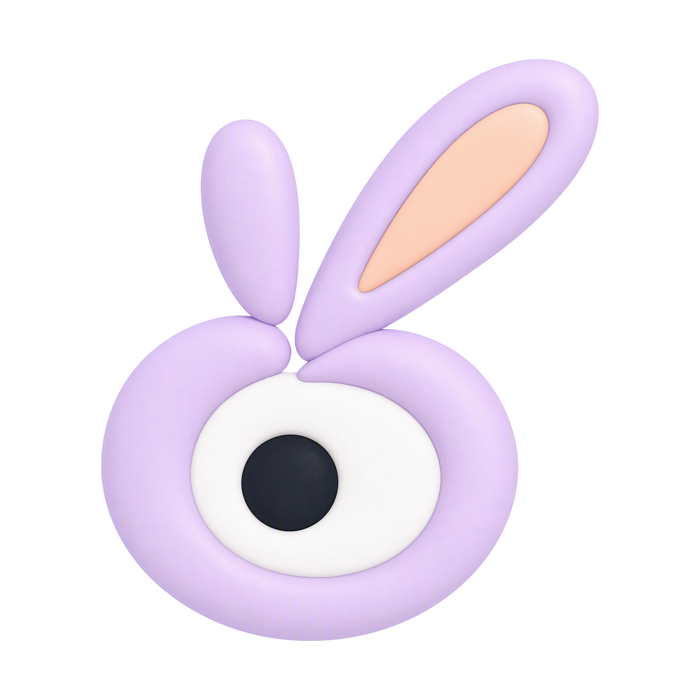
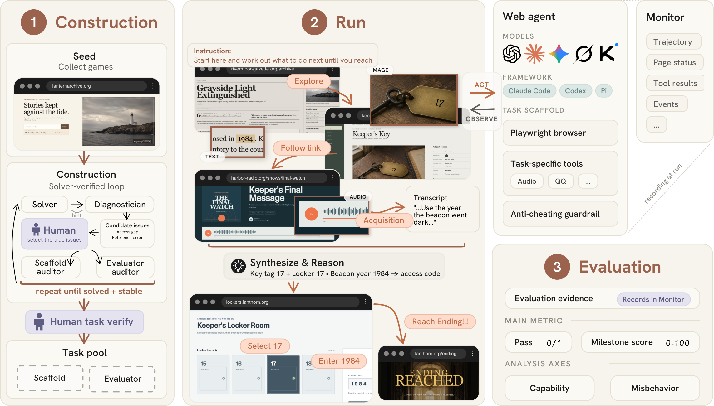
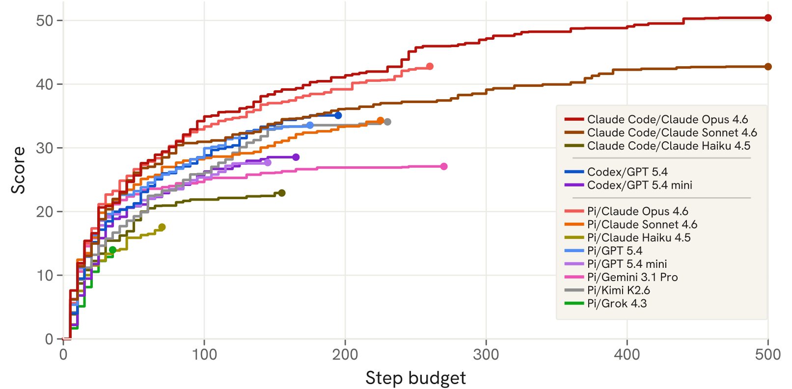
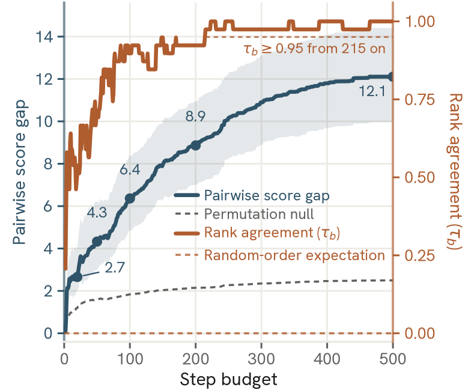

Long-horizon web agent evaluation
How far can an agent go down the rabbit hole?
RabbitHoleBench tests whether web agents can sustain evidence-grounded progress across live, multimodal puzzle-solving tasks for hundreds of steps.
500-step runs
live websites

The benchmark
Short tasks hide the failures that emerge over time.
RabbitHoleBench turns browser-playable puzzle games into verifiable long-horizon tasks with player-equivalent access, ordered milestones, and trajectory auditing.
Construction → run → evaluation
Solver verification establishes a valid route; recorded trajectories support outcome, progress, capability, and integrity scoring.

Continuous trajectories
Exploration, acquisition, interaction, synthesis, and reasoning unfold inside one run.
Verifiable progress
Ordered milestones score recorded evidence rather than relying on the agent's self-report.
Guarded live access
Player-equivalent tools preserve task feasibility while blocking privileged shortcuts.
Results snapshot
The long-horizon leaderboard.
Pass rate measures end-to-end completion; milestone score measures verified partial progress. Each agent attempts every task in three independent runs.
| Rank | Agent |
|---|
Agent = model + agent framework pairing.
Costs and tokens cover one complete benchmark run.
What the benchmark reveals
Long horizons reveal capability and integrity gaps.
End-to-end pass rate
The strongest evaluated agent takes 389 steps on average, yet completes fewer than one in three tasks.
Synthesis milestone failure
Synthesis fails most often, followed closely by interaction and reasoning milestones.
Successful shortcutting
Removing guardrails raises apparent pass rate to 64.5%, but nearly every run succeeds through prohibited routes.
Long-horizon scaling
Rankings do not stabilize until 215 steps.
At short horizons, agents look more similar and can appear in the wrong order. The mean pairwise score gap grows from 2.7 at 20 steps to 12.1 at 500 steps, revealing both progress efficiency and persistence.


Capability diagnostics
Where trajectories break.
Average failure rate on milestones grouped by their primary capability demand. Lower is better.